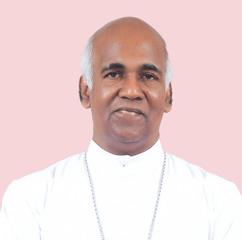

"Called to Serve in His Love"
To be Ordained Priest

Bishop of the Diocese of Mandya
Ordaining Prelate
| Date: | Saturday, 8th May 2027 |
| Venue: | De Paul Divine Retreat Centre, Thottakom, Vaikom |
Take SH15 towards Tripunithura / Thalayolaparambu to reach Thottakom, Vaikom.
View Ernakulam Route on MapTake Kottayam - Kumarakom Rd and SH42 towards Thottakom, Vaikom.
View Kottayam Route on Map